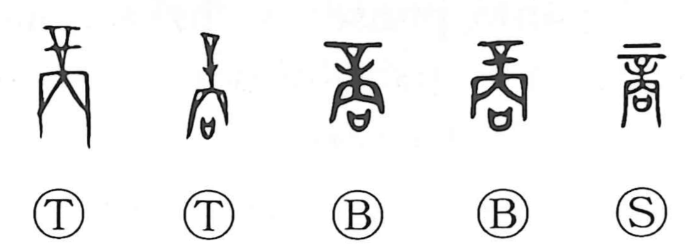

商

Kun: akinau | On: shou
to trade ・ to sell ・ commerce
Explanation
商 combines 辛, a large tattooing needle, with a stand, 㓁, and 口, a vessel containing a prayer. The needle symbolizes the authority to punish. Set upright on its base with the prayer vessel before it, it forms a solemn act of consulting the divine will. ‘Take counsel’ is the graph’s original sense.
商 is also the formal name of the Shang state; its capital is called 大邑商, the great city of Shang, in oracle-bone inscriptions.
The graph once also wrote the word later specified by 賞, a reward or grant. Reward and recompense brought it into the exchange of valuables. Its familiar meanings of trading, commerce, and merchant developed later from this sphere of compensation and transaction.